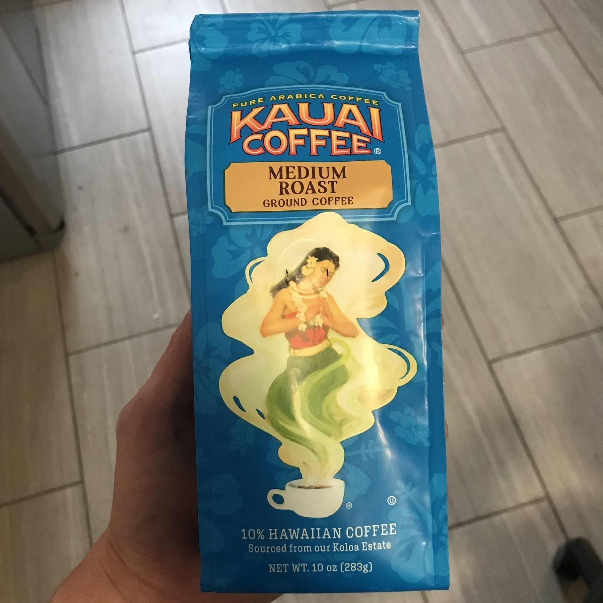

I was sitting in the Garage Cafe, listening to some tunes on my iPad, when my neighbor decided to mow his back yard. I beamed my displeasure over the fence, in his direction, and he stopped and went back inside. I might have telepathy, y’all.
I can handle if someone dislikes my writing, but there are two criticisms I try to avoid:
- Jake’s writing wasn’t clear; or
- Man, Jake just went on and on and on and on and on.
That said, I’ve been trying to let loose with my stories to give them room to grow. This morning, I finished what may be the longest story I’ve ever written, and I can’t help asking myself how the hell it got out of control.
I’m no marketing expert–just a lowly marketing major–but “10% Hawaiian” doesn’t feel bragworthy to me.

In the latest issue of Emergency Coffee, we’re breaking grammar rules, giving a shoutout to Bluey, and talking about persuasion in writing.
Earlier today I finished re-reading Stephen King’s On Writing, and while I doubt King cares one bit about my opinion, I owe him an apology. I’ve criticized On Writing as being heavy on memoir and light on writing tips, but I now realize how wrong I was.
I’m about a quarter of the way through my Galen Leather notebook and I think I’ve found my go-to for creative writing.


What’s Wrong with the Car Market? from The Journal.
This podcast episode hits close to home since the head on my engine blew out and the mechanic is having problems finding parts. Buying a new ride ain’t a great option right now either.
If you’re considering getting into fountain pens, you’re probably deciding between the Pilot Metropolitan or the Lamy Safari for your first purchase. But I’m here to tell you to consider the Pilot Kakuno. The clear body with the clear cap is a good look.
Though I’m bummed I had to get my car towed this evening, I’m proud that I handled it in a matter-of-fact manner, whereas in years past, I would have let my anxiety dominate the situation.
This Stoicism and meditation combo may be working, y’all.
Castlevania on Netflix was so refreshing: 4 seasons, 32 episodes, and it ended on a high note rather than wear out its welcome.
Serious question: Is this headline ridiculous, or is it just me? At the least, “quirks” and “oddities” are a bit much, right? “Bizarre” seems to put it all over the top.

The Obsidian Experiment is Dead
The Obsidian experiment is dead. What follows is a justification of why Obsidian did not work for me, not a takedown of Obsidian itself, because I think Obsidian is great at what it is intended for. But I don't think Obsidian is a program that I should continue using.
My problems with Obsidian play into a bigger battle for balance I've been struggling with for the last couple years or so: How much digital is enough? Or maybe the question should be: How much screen time is enough?
Like so much work in the 21st century, my day job sees me almost exclusively planted in front of a computer monitor. On top of that, I'm also in front of screens for so much of my leisure time. These days, most writing is performed on a computer. I read my RSS feeds via the computer. I watch YouTube videos or take classes via Coursera. In June I'll be starting an online technical writing certification program. Much of my shopping is performed online. I'm directionally challenged, so I rely on my smartphone's GPS to get me from A to B. Oh yeah, and don't forget about podcasts and the music synced from my Plex server I listen to on that same screen that conveniently fits in my pocket.
It's no secret why so many of us use screens so often. They're efficient. The possibilities are damn near endless.
But how much screen time do I need? I've made great strides in reducing my screen time over the last couple years, and I still use screens way too much.
Ultimately, Obsidian is just another thing to keep me in front of a screen more often. Perhaps paradoxically, using Obsidian pushed me back to bullet journaling. It made me realize that I still wanted some things to be handled in an analog manner. While I acknowledge that screens often allow us to be more productive, I'm not sure they consistently always allow us to be more creative. For me, there's something about pulling out the old pen and paper. It's as if slowing down in such a way gives me the opportunity to sort through the noise and find something to pursue.
While I see the benefits of Obsidian, I don't think it's something I should continue to use. For me, it's just something else to get lost in and distracted by. Perhaps I would feel differently if I had different aims, but my ambitions outside of my day job relate to writing and becoming a better writer. I'm not sure Obsidian empowers my ambitions any more than pen and paper and iA writer.
Perhaps Obsidian is a casualty of my becoming set in my ways. I won't deny that possibility, but if that's the case, this is one case in which I'm not going to fight it. Either way, I'm better off just doing what I'm doing. Not everything is about efficiency and productivity after all. Some things should be done if not only for joy, then primarily for joy. And I do enjoy documenting certain thoughts using analog methods, even if that means that they can't later be linked together to create some groovy graphs.
Does anyone have any experience with Scribophile? I tried it briefly in the past but didn’t give it a fair chance before closing my account. I’m back again, since my writing group seems dead again.
My new favorite thing is the “Garage Cafe”, in which I sit at our card table in the middle of the garage with the doors open. It’s perfect for this cool, rainy spring evening.

The next time I’m recruiting for a writing group, I’m going to put out feelers on LinkedIn because that appears to be where all the failed fiction writers hang out these days.
These days I keep up with the NFL mostly for water cooler chat, but this Aaron Rodgers drama is SPICY. I don’t care how it plays out. I’m just along for the ride.


I once heard a piece of professional philosophy that went something like:
If you’re not making mistakes, you’re not trying.
For writers, it would be:
If you ain’t making typos, you ain’t writing.
With today’s launch of my monthly writing newsletter, I continue my trend of pretending I know what I’m talking about.
The Haunted House Next Door, a new vignette at Turkey House Publishing, is an exploration of how we play scenarios in our heads vs. how we actually act.
This morning I learned that “spicket” is not a real word. The word I was looking for is “spigot.”
Despite growing up in the sticks, I’ve never thought of myself as a country boy, but this is a reminder that we’re all shaped by where we were raised.
Another new story at Turkey House Publishing…
The story can best be summed up by these lyrics from “Two to Birkenhead” by Bill Ryder-Jones:
They say that desperate times call for desperate pleasures
Attempting to write a novel has forced me to eat humble pie as it has shown me that I’m still not ready for the task. At least I’ve made some progress on my short story collection.
I’m interested in and fascinated by the ways we sabotage ourselves. My latest short story at Turkey House Publishing explores this in its own way.
In the last couple years, I re-watched The NeverEnding Story with my son, and everyone asked if he was okay after the Artex scene in the Swamp of Sadness, but they should have been asking about ME.
I prefer not to read books by the same author back to back, but after re-reading Albert Camus’s The Stranger, I couldn’t resist the urge to check out The Plague, which I’ll start tonight. Though the book likely should have been on my 2020 list, it still feels timely in 2021.
Emergency Coffee--a writing newsletter
I will be dropping the first edition of Emergency Coffee, my writing newsletter, on 05.01.2021. This is my equivalent of a press release. I suck at marketing even though I have a degree in it.
Some things I’m using to push me toward finishing a novel/novella:
- Write 500 words a day. Stop once I’ve hit my goal.
- Pick up wherever yesterday’s writing left off. No deleting previous days’ efforts.
I’m pretty sure what I have so far is horrible, but I’m reminding myself that the point is to complete a rough draft. It’s easier to rewrite and edit when you actually have something to work with. Perfection is a pointless goal, and great writing is iterative.
I don’t think I’ve watched a movie so far in 2021. This is not intentional. It’s just happened (or failed to). Maybe it’s time to break my streak.


I’m not proud of what I’ve written so much as I’m proud of the fact that I’ve written. The first chapter of my novel/novella is done.
I’m excited to have picked up When Breath Becomes Air by Paul Kalinithi on Kindle for $2.99. The author’s bravery in the face of certain death continues to inspire me long after my first reading.

Peer pressure has led to the adoption of a now page. I’m trying to lean into this whole calling-myself-a-writer thing. No need to be so humble about it.

My first live music spiritual experience was courtesy of Radiohead in 2008, shortly after I had moved to Texas. Music had been my drug of choice since I was a teenager, and experiencing three members playing the same heavy beat during the beginning of “There, There” reached some primal part of me that had never been touched before.
The song remains my favorite Radiohead tune and has some of my favorite lines:
Just ‘cause you feel it
Doesn’t mean it’s there
How fallible we are, how poor our judgment…
There’s always a siren
Singing you to shipwreck
So many promises sound so pretty yet lead only to disaster…
We are accidents
Waiting to happen
Always reminds me of humanity’s imperfect nature…
I don’t know why this song and that experience are in my head right now, and I don’t know why I feel compelled to write about them in this messy way, but I do and so I am.
I recently obligated myself to write at least 500 words every day. I intended to fill my obligations by writing fiction, whether vignettes or flash or stories that went beyond 500 words, but I’ve instead filled them with philosophical rants.
I’m fourteen years old again.
Sometimes I use MindNode to outline story ideas, but I’m not sure it’s worth it for me to continue the subscription.
Welp, the Mind Map plugin for Obsidian has me covered.

Epictetus has been dropping some fire in the last couple entries of The Daily Stoic:
4.10
It isn’t events themselves that disturb people, but only their judgments about them.
4.11
Throw out your conceited opinions, for it is impossible for a person to begin to learn what he thinks he already knows.


I’ve been listening to “A Real Hero” incessantly over the last few days and have been wanting to rewatch Drive, so it’s only fitting that I switch my Obsidian theme to 80s Neon.

This week, inspired by the Shuffle plugin for Obsidian, I made a goal to write 500 words every day. Since making this goal, I have written every day but have hit 500 words only once–my first day, when I wrote two prompts.
The problem is that if I have specific goals (such as including three certain words in a story), I focus only on those requirements and try to squeeze them in as quickly as possible, neglecting to write an actual story.
Philip K. Dick’s The Man in the High Castle is the first book I’ve given up on this year. I would have thought a book that rewrites history so that the Axis powers win World War II would be much more interesting by the time I was a third of the way through it.
I haven’t had much inspiration for new stories lately. Fortunately, the Shuffle plugin for Obsidian has me covered.

I’ve gone back and forth over whether to keep everything on one site or to separate certain things.
I’ve decided to put my creative writing on another site, Turkey House Publishing. Much excite!
I’ve started working on my own writing manifesto, a declaration of my writing goals and philosophy. It’s fun to try to figure out where everything fits in.


The last couple writing group meetings have gotten derailed, but we had a make-up session tonight. I always feel better after talking to my support group.

I don’t know why it took me so long to realize my Obsidian vault could benefit from an Index/Home page. Now it’s all coming together.


I’d say the daily notes portion of my Obsidian setup is coming along nicely.

I’m hoping that the daily notes can be the foundation of Obsidian going forward. At least until Obsidian has a mobile app, I’ll likely start dumping all the day’s notes into the daily entry and then edit them whenever I’m at my computer again.

A Morning Dive into Obsidian
This morning I decided to take a bit of a focused deep dive into Obsidian. I started by expanding upon something simple and elaborating on it.
The focus of this morning’s deep dive was a note titled “Books Read”, which is just what it sounds like: books I’ve read since starting the note. Shortly after subscribing to micro.blog, I started keeping a list of books I’ve read on my own site. But after spending an hour or so working on this note, I can see where Obsidian can benefit such tracking.
Below is a screenshot of my “Books Read” note to give an idea of what I’m working with.

The colorful Dracula theme may be distracting, so I’d like to point out that the text in orange signifies an internal link. Links for book titles point to my thoughts on the book. (I hesitate to call them reviews because they’re hardly of that quality, but in my defense, I’m filling most of these in weeks after having completed the titles.)
You may also notice that some authors have links, and as you would expect, that means I have created my own entries for them.
Let’s take a dive into Play It as It Lays by Joan Didion. And let’s focus on the concept of how this relates to Obsidian rather than the content (or lack thereof) of my notes going forward.
Below is what we see when we check out Play It as It Lays.

In this quick note, you can already see a couple links starting to build, one to the author herself, Joan Didion, and another writer she influenced, being Bret Easton Ellis.
Then, if we click on Joan Didion…

We’re starting to see more links building. One link goes from Didion to Ernest Hemingway and another to Bret Easton Ellis. If I were someone trying to discover my literary influences, this would be big. I can see a path being created and a bit of an identity forming as a result.
Just for craps and giggles, here’s the graph resulting from my “Books Read” note.

“Books Read” is in the center, and you can see all of the titles I’ve read spoking off that center, but on one side, you can see some funky links between nodes. This is hardly impressive in its current form, but I can see how this all starts to build on itself. It’s important to remember that this is not a knowledge base for the world. This is your knowledge base, so it’s most important to see how these items link for you.
And finally, for more craps and giggles, here’s a screenshot of my entire graph in Obsidian.

Adventures in Obsidian
When you're young, you can't help making fun of your elders' inflexibility. You know you used to snicker when you'd hear the old men say stuff like:
You can't mix country music and rock 'n' roll. You can't do it! It just ain't right!
You go about your life in your youthful smug way until you wake up one day and realize you're now that old person. Or, at best, you're becoming that old person. And this is where I find myself at 36 years of age, constantly reminded every single day that I am set in my ways, no matter how unintentionally that happened.
And here I am, giving Obsidian, something which seems to go against everything I know, a shot. And the transition ain't the smoothest.
What is Obsidian
Obsidian touts itself as a second brain.
From their website:
The human brain is non-linear: we jump from idea to idea, all the time. Your second brain should work the same.
Your second brain is comprised of a collection of notes in Markdown, which I consider one of my favorite inventions of all time--I wish I were joking about that.
One of the foundations of Obsidian is linking your posts together. These links help you to jump between files (thoughts). Also, once you've built up some links, you can check out the graph view and get a visual of how your thoughts link together. Let's be honest: The visual is why we're really here. We're doing this for the 'gram.
 Example of a graph view, from Obsidian's website
Example of a graph view, from Obsidian's website
What I've tried so far
I've imported my old notes, consisting mostly of blog posts, vignettes, short stories, and notes for a couple novels. I've also started a journal and am in the process of establishing a template for daily entries.
 My daily journal template--sure to change
My daily journal template--sure to change
I'm also trying to let go of using folders for organization and instead rely almost solely on links, with some exceptions: So far I have folders for my journal entries, attachments, and templates. There's no reason I can't use more folders, as the option is a core feature of Obsidian, but I figure that doing so will hold me back from embracing this new-to-me system.
My concerns
Can I find a way for Obsidian to benefit me, primarily as a writer? I read an article from a writer who said she breaks her writing into three stages in Obsidian:
- Research
- Outline
- Drafts
You may already do this, but chances are that your three stages aren't literally linked together, making for easy shifting between the steps. She also goes on to talk about how she can open multiple notes at the same time and put her research or outline note next to her draft note.
Another concern: Am I wasting time on something else on the internet that looks shiny and exciting but will ultimately be something that I don't need? There's always a chance of that, but I'll never know if I don't check it out for myself.
And, perhaps most importantly, as I touched on in the introduction of this post, I am realizing that I am set in certain ways, which makes me cringe to say or type. I don't have the brain juice to switch gears, nor do I have the time, so while I'm worried that this new way of doing things may not be for me, I also have to acknowledge that I simply may not be able to embrace something that could benefit me.
Where I'm hopeful
In theory, linking between notes can make journaling useful for me. I've tried journaling in various forms over the years, and nothing has stuck. But, maybe I can have some barebones journal entries with links to other things that materialize from those entries, so while the entries themselves may be uninspiring, perhaps I can literally see (via the graph view) how those entries affect other aspects of my life.
As of right now, Obsidian does not have mobile apps, though they are reportedly in development, so I am hoping that the apps will be up to the standards of the desktop app. Until the mobile apps are released, I can rely on iA writer for editing notes on the go.
Follow along
Someone on micro.blog recently made the point that more people should share their journeys with new software and methods because it gives others hope and the opportunity to learn along with you, so I'm going to give it a shot. I plan on posting more related posts under the category "Adventures in Obsidian".
Due to micro.blog peer pressure, I’ve decided to give Obsidian a real shot. I’m curious to see how far I can take my writing within the program.

New Blogging Platform, New Blogging Style
I hopped onto micro.blog earlier this year. I forget exactly when because this is, I believe, the third time I’ve given the platform a shot, and I’m too lazy to look up the exact date. In the past, I simply couldn’t find a place for micro.blog in my digital life, but the service made sense once I turned my back yet again on Twitter. But that doesn’t mean that my adoption has been seamless. It hasn’t been all rainbows and unicorn farts. Once I had found a place for micro.blog, I then struggled to find my limitations for the service. Did I want it to be only a microblog? Did I want to include long-form blog posts too? What about my short stories? For someone who prefers to compartmentalize, this amounted to a blogging existential nightmare.
I’ve realized that much of my confusion stemmed from my insistence of holding onto my old blog posts, ones that started in 2018 when I made an effort to regularly write again. Looking through these old posts, I realized just how much they centered on grief, from the losses of my mother, father, and stepfather all so close together. As if that weren’t enough, I also had to contend with the loss of myself, the loss of a certain innocence, a certain ignorance. Existential AF, y’all.
Those old posts are precious to me in a way that only I could fully appreciate. Writing has always been my way of making sense of the world around me, so I don’t think it’s hyperbole to say that these old posts helped me to make sense of my experience and that the world made less sense when I wasn’t writing. Those old posts brought understanding. They brought tears. But they also brought peace.
But I’ve realized over the last couple days that I don’t need to bring those posts with me anymore. I don’t need to hold onto them. I am not done with my grief. But I’m done with my grief’s being my primary concern. It’s time to move on and forward, because as my losses have taught me, however long I have, it won’t be nearly long enough.
Grief is something that stays with you. It never really leaves and it resurfaces at times and in ways you could never predict. And I think that’s how those old posts will be: The lessons and revelations will pop up, even if I’m unaware.
It hasn’t been so easy for me to embrace some of the philosophy behind micro.blog. Perhaps because I’m approaching middle age, I found myself digging my heels in and wanting to keep a wall between a microblog and a traditional blog. I had a hard time getting behind Manton’s claim that you’re creating a blog even while microblogging. But as I spend more time on the platform, I’m coming around to the idea.
I appreciate that micro.blog has the flexibility of hosting microposts and longer posts together. I still want to write traditional blog posts from time to time, but they’re no longer my focus. The simple truth is that most of what I want to say doesn’t require much thought; it’s a blip on the radar that I want to throw out into the world for whatever reason. And I want to use most of my long-form writing juice for short stories, with the hope of eventually writing a novel.
The point of this site, my vanity project, is to capture me. Not only my long-form blog posts, but a bit of everything. And holding onto those old posts that were written on other platforms with other intentions doesn’t serve me.
And so, it’s time for this old dog to learn some new tricks.
Note: I’m planning to keep the old posts around as an archive. I still have about 4 and a half years left on my five-year subscription, so maybe it’ll be a while before I take the old posts out back and cap them like Old Yeller.


Adjusting to pandemic life was tough, but after the glimpse from the last few weeks, I’m worried adjusting to post-pandemic life may be just as difficult. I forgot just how bad these DFW commutes could be.


I was recently reminded me of the SPAM haiku archive. If you’re looking for a way to waste your Sunday…

This morning someone responded to a work email and addressed me as “Jack”. Such incidents keep me humble.

Play Me A Few Notes, Sonny
For me, getting older has been a bit of a mixed bag. In some ways, life gets easier as I figure things out and learn to prioritize what truly matters. If you’re struggling with this, consider checking out Mark Manson’s book on the matter.
On the other hand, I suppose it’s only natural to long for the good old days, a time when the world made sense and we were flexible enough to adapt.
For me, one of the saddest parts about getting older is that I don’t listen to music the way I used to. I don’t listen to complete albums. I don’t obsess over the details of the production and instrumentation, the stories behind the songs. And that’s what one would expect, because I’m an adult with responsibilities, and my time is more precious than it was when I was a teenager in podunk Louisiana, using music as my escape.
But man, how I used to get high on tunes. I remember the drama of downloading songs via Napster on my home computer’s 19.2kbps dial-up connection. So many times I’d wait nearly an hour for a song to download, only to have the connection severed at the end, leaving the file incomplete and unusable. I also searched out albums on the Tower Records website and then sat in agony over the next few days–or maybe it was weeks; I’ve been spoiled so long by Amazon’s two-day deliveries that I forget what it was like before–and there was little as exciting as getting new CDs in the mail. I used to love playing a CD low while I slept, one of my favorites being My Bloody Valentine’s Loveless. (Side note: I think My Bloody Valentine’s “When You Sleep” is the most interesting song to search for covers on YouTube.)
My best friend in college is the only person from my Louisiana days that I stay in frequent contact with. While we’ve both grown over the years–and so has our relationship–it all started due to music, when I complimented his t-shirt of The Cure’s Disintegration album, my favorite of all time. We soon discovered we liked many of the same bands beyond The Cure: Joy Division, Pixies, Primal Scream, My Bloody Valentine, etc. Music wasn’t our only thing. We enjoyed many of the same movies. We played video games. We both loved Johnny’s Pizza. But I doubt we would have ever had the friendship I cherish if it weren’t for music.
Recently, someone on micro.blog–I believe it was Andrew Doran–was pushing Bandcamp as a great platform for musicians. I had used Bandcamp in the past and had just a few months before bought my first album on there, but for some reason, this post resonated with me and convinced me to dive a bit deeper, resulting in the purchase of ten more albums, the most recent being this morning’s purchase of Yawn by Bill Ryder-Jones. Jones is one of my favorite new-to-me artists of the last few years, and Yawn is persistently melancholy, making for great music to reminisce to.
I’ve spent the last few weeks listening to music I have paid for. I find I’m more likely to listen to a complete album, to experience the whole piece. Music matters more again. It inspires more again. And this practice has the added benefit of making me get more value out of my Plex server.
Perhaps paradoxically, I think having such easy access to music via streaming services like Spotify had killed the value of music for me. There’s something about going out of your way to purchase music. It’s how you show what you value. It’s an investment–of money and time–even in the click-buy-and-download of today’s internet.
To be clear, I am not saying that we should all shun such streaming services. Some people may not be able to fork over $10 or so per album. And the platforms do help artists get exposure. I likely wouldn’t have discovered artists such as Bill Ryder-Jones if it weren’t for Spotify.
But individuals don’t have to take every option they’re presented with. Sometimes there’s a certain freedom in saying no. And maybe this is one of those situations for me.
I was planning to release a short story collection on Kindle, but now I’m thinking about putting it together in iA writer and releasing it as an EPUB.
I don’t have much of a digital presence and I’m not going to put a marketing strategy behind it. The real value will come from the experience of putting the collection together. And if some people read it and I get some exposure, that’ll be pure bonus.

Someone recently shared a story about how he had to dodge the clothesline whenever he backed out to leave his grandmother’s house and then when he went back to her place after she’d died, he accommodated for the clothesline even though it was no longer there.

I’ve been in a writing funk lately. This morning I forced myself to resume a certain short story, which took a slight turn and excited me and now has the writer wheels in my brain turning again.
I’m sure there’s a moral somewhere in this anecdote.
The New Routine
I had just started getting a hold of a routine when the pandemic came along and crapped right on my best efforts. I spent most of 2020 trying to regain some semblance of routine. I’m sure I’m hardly alone in that struggle. The good news is that the last year has given plenty of opportunity to realign my priorities.
Now, in the spring of 2021, the message feels consistent and real for America: There’s reason for optimism. The consensus seems to be that by summer, every American adult who wants the vaccine will have the opportunity to get the jab. And that actually seems to be the worst case scenario now.
Earlier this week, while stuck at a red light in the seemingly busier Dallas-Fort Worth traffic, I caught myself daydreaming about the near future. I let my guard down and started wondering what my immediate post-pandemic future looks like. I was considering the revelation of this past year and beginning to think about the new routine.
The globe won’t go back to normal by summer, as other countries won’t have access to the vaccine. But I’m excited for some sort of progress. If we can’t win the war yet, at least we can win a battle.
I’m ready for the return of spring. I need to take advantage of the weather and longer days by playing more disc golf.


A couple years ago, my son picked up this bookmark and said, “It’s you, Daddy,” alerting me that I am literally his model for what it means to be a man.
No pressure, son. No pressure.


Our last visit to Fry’s, in January 2020. I had never before been sad to see a store withering away.
I wasted so much money here and bought my son so many 50-cent ninja men from the gumball-style machines at the front of the store.
RIP in peace, Fry’s

The Lessons of 2020 and Beyond
2020 is behind us, but the mood carries on, so we find ourselves in limbo, able to reflect on our recent past while still experiencing it.
On December 31, it seemed as if most people were optimistic that 2021 was going to be instantly better than 2020. But as the coronavirus has persisted and after the Capitol riots, a co-worker and I agreed that 2021 is just 2020 overtime. I’m glad I prepared myself for the possibility that 2021 may suck harder than 2020.
Last week, Texas was hit with an epic storm. Millions lost power. Some lost water or had to boil before use. Compared to some, my family was lucky. We were without power for most of Monday and Tuesday, but we did have little blocks of time in which we were electrified, allowing us to recharge our devices and prep meals in advance.
Though this recent polar vortex, arctic blast, deep freeze–whatever you want to call it–was a new challenge, in so many ways it echoed my biggest takeaway of 2020:
Even well-functioning systems are fragile.
America was on a roll before the pandemic. The stock market looked as if it could go only up. And it was a given that America would be business-as-usual on any given day.
When was the last time the whole nation slowed down? The 1970s oil crisis? World War II, when everyone had to sacrifice in some way to support the war effort? We can argue about the specific answer to the question, but the larger point stays the same: In so many ways, we’ve had it so good for so long.
What could possibly derail this gravy train? Apparently, all it took was a virus that mutated in a wet market in some little corner of China. There’s no point in recapping what has happened since then: We’ve all experienced it and we’re all aware, and if this doesn’t apply to you, how? Who are you? I wanna know.
Texas is a state proud of its size. At one time while driving around Dallas-Fort Worth, you could find billboard signs advertising that Texas is bigger than France and that DFW Airport than the island of Manhattan. If you go to a restaurant and find yourself wondering what “Texas size” means, rest assured it ain’t the diet portion.
So when Texas gets a taste of a winter storm, it gets a BIG taste. As I said before, I lost power for significant portions of last week, but some people were without power and water for days. Some people’s homes were destroyed due to water damage from burst pipes. The damage was big and the insurance claims will be big and the FEMA relief will likely be big.
This experience prompted me to ask, When was the last time I had to go without power for multiple days? I imagine I last experienced this in the ‘90s as a kid when north Louisiana got hit with a freak ice storm. (And my wife wonders why I hate the cold.)
We take for granted that we’ll have electricity, running water, and natural gas at our beck and call. We expect restaurants and businesses to be open. We expect grocery stores to keep their shelves stocked with everything we could want or need.
And yet it takes only one chill to derail it all. To bring West Texas oil production to a halt. To negate the streak of comfort we grew accustomed to.
Of course, maybe the fallout wouldn’t have been so drastic if Texas’s power infrastructure were properly winterized, but don’t tell Governor Abbott that as he seeks to blame anything else for the disaster.
Onward to Lesson #2:
No matter how impressive an individual or organization, remember that he or it can still falter.
It’s early 2021. The world has at least three vaccines. America, whose citizens found a way to all but guarantee two-day shipping to nearly every corner of the lower 48, can’t roll out doses in a timely manner. Yes, there are some unusual circumstances, such as at least one of the vaccines needing to be stored at extreme cold temperatures, but there have been problems getting doses to people who want them even when the vaccine has reached vaccination locations.
If you had to say that America had only one thing figured out, logistics would be a good candidate. And yet we’re pooping on ourselves in a crucial moment.
To be clear, I don’t mean to come across as pointing the finger. In light of my ignorance, I know that this vaccine rollout is far more complex than I will ever understand. But one of the keys to daily contentedness lies in managing one’s expectations. And we need to start expecting things to go wrong more often, and if they don’t go wrong–well, hopefully we’ll be that much more appreciative.
That brings me to lesson #3, which is more of a general bonus lesson rather than one tied to 2020 and beyond:
Don’t compare a situation to an ideal of Utopia. Instead compare it to its past iterations.
When I hear people criticize a system they’ve become disenchanted with, they usually jump to the question of why isn’t the system better AKA perfect.
To give an example that (hopefully) won’t anger anyone, you’ve likely seen people online asking why we didn’t get hoverboards back in 2015 like the Back to the Future franchise promised back in the ‘80s. I know, it’s easy to feel as if we’ve been cheated. But keep in mind that just over 100 years ago, we had to travel by horse and buggy. A trip that now takes an hour in your car might have been a multiple-day trip, depending on the terrain and conditions. And then you’d get halfway there, and your horse would step in some soft ground and break his leg and you’d have to take him out like Old Yeller and ask yourself whether you want to head back home or continue on to your destination on foot. When I look at it that way, I’m fine missing out on hoverboards.
For the record, this doesn’t mean that we should only be content with what we have and not strive for progress or something better. But we should hold close an appreciation of where we’ve come from. Also, acknowledging progress made gives a bit of hope, because if we’ve done better in the past, there’s no reason we can’t do better in the future. But looking ahead to a Utopia that will never exist actually does the opposite: It gives the impression that we will never achieve greatness.
And of course, you may say that 100 years is so long ago, we should expect to have it much better. But keep in mind that 100 years is now little more than a lifetime (at least in America).
The world changes in the blink of an eye. If you’re not convinced of that, at least acknowledge that your world can chance in such a span.
And 2020 and beyond have shown me the importance of being mentally prepared for the possibilities.
Reading Ernest Hemingway’s In Our Time makes me realize that I don’t dislike Hemingway–I dislike Hemingway’s novels. His short stories are top notch.
2 takeaways from 2020 and beyond:
When criticizing a system, don’t compare it to Utopia. Compare it to absolute disaster, since that is far likelier than Utopia.
Functioning systems are not a given; they are blessings which can be easily derailed.

The good thing about the power outages from Texas Snowpocalypse 2021: I’ve had more time to read and am now one step closer to finishing my reading goals for the year.


Today I’m thinking about the time a group of us were at Cafe Brazil and the waiter said, “Happy Valentine’s Day, y’all,” as he dropped off the check and turned to walk away and it was such a strange encounter.
Journaling doesn’t work for me; it ends up a mundane retelling of the day’s events with no flavor.
For last night’s entry, I took a real event from the day and fictionalized it a bit for a vignette/short story. I might have found a new journaling practice.
Last night I prepped the John Wick trilogy for my Plex server, and now I’m itching to rewatch the original. I love the simplicity of John Wick and how the movie knows what it is and stays in its lane.

This morning I finished Play It As It Lays, the first Joan Didion fiction I’ve read. My biggest problem with Didion is that it took me so long to check her out.
Going through the Micro Monday archives, I recently listened to #83, in which @jeremycherfas and @jean discuss Italian food, which inspired me to make stuffed shells tonight.
So my wife now approves of micro.blog even though she doesn’t really know what it is.


Technology is great, but it’s made certain aspects of storytelling more difficult.
From The Ringer: All Serial-Killer Movies Should Take Place in the Pre-Cellphone Era
One of the most refreshing things about micro.blog: I haven’t seen any gifs or memes. Not that I’m against them completely, but after a few weeks on micro.blog, it’s obvious just how prevalent memes and gifs are on social media in general.


Shirley Jackson’s The Haunting of Hill House is the first novel I’ve read in 2021. My fiction reading is off to a great start for the year.
Confession: I once wrote an instruction manual for using a chimney starter for a technical writing class, but I almost always have problems starting my fire with a chimney starter.
I am a fraud.

2021 Goals
I no longer see goals as pending accomplishments but as immediate motivators. Little happens without movement, and movement is easier with a rough outline. Instead of plotting your trip down to the last tenth of a mile, maybe just head north for a while and don’t feel bad if you take an alternate path when you find a boulder in your way.
But if you possess enough dynamite to remove the obstacle, by all means let ‘er blow and carry on your merry way. Just remember: Cool guys don’t look at explosions. They blow things up and then walk away.
Writerly goals
Read 30 books
I’m not sure how many books I read in any given year because I’ve never kept a list, even though I’ve said I was going to numerous times. I want to set a reading goal, but the fashionable “50 books in a year” seems a bit much for me. For one, I’m a slow reader. And life happens and more important things get in the way. 30 seems like a reasonable goal for nearly anyone, so I’m going to give it a shot in 2021.
Take 3 writing classes
Writing is my hobby, one I want to invest more into. Last year I took a technical writing class. This year I want to take three writing classes. I don’t care whether the classes pertain to professional writing or creative writing, and I can get them on the cheap with Coursera.
Entertainment
Finish watching Kids in the Hall
I bought the series DVD collection for Kids in the Hall two years ago. I’m pretty sure one of my unofficial goals for 2020 was to finish watching the series. I can’t believe I didn’t do it, since I, like most other people, spent more time at home in 2020.
As it stands, I’m about halfway through Season 2. That leaves about 75 episodes. Gotta get busy planting myself in front of the idiot box.
And while we’re at it I might as well finish rewatching Chappelle’s Show.
Fashion
No more blue jeans
Look, blue jeans suck. They’re heavy and uncomfortable. Ugh. There are better options: khakis, chinos, going nude.
Everyone knows that these days, real activism needs a hashtag, so join me in making #nodenimin2021 a reality.
Onward to 2021
I thought I could come up with more goals, but seeing how the universe threw a curveball and wrecked all my plans for 2020, maybe it’s best to keep things simple this year.
Happy New Year, y’all
Places That Once Were
Landmen have an interesting relationship with history. Some will harken back to the good old days of driving out to a rancher’s property and discussing business among prospect maps spread over the hood of a pickup truck and closing deals with handshakes. If you stick around long enough in this field–I’m nearing my thirteenth year–you likely develop at least a passing interest in the history of the land and the minerals underneath. And the history of the owners, sometimes leading to revelations of betrayal and the accompanying family feuds. When researching title, you may become more familiar with other people’s family trees than you are of your own. And don’t let anyone tell you that wills, probate proceedings, and affidavits can’t be exciting–sometimes you find some four-letter words and some spicy accusations in those documents.
A desire to advance my career led to a five-year stint in Midland, Texas, a place not known as a hotspot for things to do. Desperate times call for desperate pleasures, as Bill Ryder-Jones said, so in the land of oil, even your escapes may be related to petroleum in some way. At some point, I spent a day driving across Reagan County, starting with a town called Stiles, once the county seat until it was bypassed by the railroad and oil was discovered in Big Lake. These days little remains in Stiles, other than the remains of the former courthouse.
 The old Reagan County courthouse in Stiles, TX
The old Reagan County courthouse in Stiles, TX
A former neighbor told me that the chainlink fence surrounding the old courthouse was erected after someone tried to burn it down a few times. I do not condone trespassing, but the fence had been cut when I visited, so I couldn’t resist the temptation to step inside.
 Inside the courthouse
Inside the courthouse
Next my adventures saw me going to the settlement once called Best. I was surprised Best had a sign announcing its border, since I saw nothing else to suggest anyone ever lived within its limits. I doubt much worth remembering ever happened there since it was said that Best had the worst residents.
The last leg of my Reagan County world tour took me to Texon, the home of the Santa Rita No. 1, the well which gave birth to decades of drilling in the Permian Basin. Aside from a monument to the well named after the patron saint of foolish endeavors–an appropriate name since crews sought oil for two years before finding reliable production–I saw an old scout shack with some used tires and a decaying goat.
 The old scout shack in Texon, TX
The old scout shack in Texon, TX
Each of these towns, which would be considered dead by modern measures, had its day and its history. These towns were once functioning communities with schools, banks, markets, churches, and post offices. These were places where people built lives. Places where people dreamed of a bright future. But these places in Reagan County are hardly alone, as the same goes for Thurber, Texas (way over in Erath County), a former company coal mining town, which was at one time the largest settlement between Fort Worth and El Paso, and which now boasts a population of five, along with two restaurants and an old smokestack as an homage to its past. Who would have thought that the first electrified city in Texas would someday be reduced to a footnote in the history books.
 The lone smokestack remaining in Thurber, TX
The lone smokestack remaining in Thurber, TX
And the same goes for the Baker Hotel, located in Mineral Wells and formerly a resort for the elites who thought the town’s spring waters had therapeutic qualities. According to Wikipedia, “the star-studded guest list included Glenn Miller, Lawrence Welk, Clark Gable, Judy Garland, future U.S. President Lyndon B. Johnson, and even The Three Stooges. It is even rumored by local historians that legendary outlaws Bonnie Parker and Clyde Barrow may have spent a night or two at the Baker.” An investment company had purchased the Baker and had broken ground on renovations before the pandemic, so maybe there’s a chance that the old hotel will be once again be somewhere new memories are made.
 The Baker Hotel circa 2015
The Baker Hotel circa 2015
At one time, people would have imagined these locations would last forever, and now these places are little more than distant memories. If such places have come and gone, why should we expect any of our comforts to be immune to such possibility? Why would we expect our jobs to be invulnerable? Our industries? Whole swaths of an economy? The pandemic has shown the flaws in many of our collective assumptions, and history echoes some of those callouts.
More often than not, we should live through the lens of probability: If x then y; what do the statistics say? Yet there is utility in entertaining possibility, if only to be slightly more prepared for it. History can be a great tool for learning possibility, because while history may not repeat itself, it does often rhyme. And sometimes it features rhymes accompanied by 808s and heartbreak.
Americans are horrible at accepting impermanence. Look no further than how hard some will fight for that extra year of life, often an extra year of pain and suffering. Life goes on long after the thrill of living is gone…
Yet my life has improved as I’ve learned to accept that all I hold dear will be forgotten after the earth makes a few more passes around the sun. That is more than possibility or probability. It is inevitability.
When I visit ghost towns and abandoned places–places that once were–I can’t help daydreaming about the stories forgotten in time. These days, I think about the stories that have been lost through those dear to me who have passed. How many stories will be lost because of my reluctance to share? These thoughts and questions, which once seemed silly, became more important once I had kids.
I have a habit of living anywhere other than the present. I replay the past in my head and beat myself up for things I cannot change. I look ahead to catastrophes that may never materialize and work myself up over nothing. But with the help of meditation and Stoicism, I’ve become better at living in the moment, though like an addict, I relapse. Reminding myself of impermanence also helps. If precious moments are destined to be forgotten, then they should be enjoyed in their time.
Perhaps you’ve heard certain mantras that help to keep this in perspective for you:
Nothing lasts forever.
This too shall pass. (This mantra applies to the good times too).
Things come, things go.
But for me, seeing is believing.
The Happening in Aurora, Texas
When you hear about Texas, a few things may come to mind:
- Cowboys
- The Alamo
- Salsa and cheese dip
- Big AF state
You likely don’t think of the state as possibly being home to America’s first UFO crash, which took place 50 years before the better-known Roswell incident. From my experience, most people in the Dallas-Fort Worth area are unaware of the Aurora, Texas, UFO incident, even though it happened practically in their back yard.
Long story short, way back in 1897–before the Wright brothers blasted their fly rides into the sky and made it cry–a cigar-shaped spaceship wrecked into a windmill on the judge’s property. The pilot, some tiny human-like creature, was buried in the local cemetery.

Of course, any good alien story has to have some additional layers to it.
Supposedly, some metal from the wreckage was thrown into the property’s water well and a future owner would claim that the well water gave him gout and so he closed the well in.
When the locals buried the little alien man, they left a grave marker, which was supposedly later retrieved by the army. Truth ears have replaced the marker numerous times with some sort of rock or object over the decades. The cemetery will not allow anyone to exhume the alien, but according to the History Channel’s UFO Hunters, there is a collapsed and deteriorated grave at the alien’s plot.
Perhaps this story isn’t better known because it has been nearly unanimously accepted as legend and was most likely a PR stunt by a local journalist to stir up interest in the dying town. But it’s one I like to tell when I get the chance.
I do not believe in aliens insofar as little green men flying around in bubbly spaceships with strange lights and looking for people to abduct for the sake of a little probing action, but I do love the story behind the Aurora, Texas, UFO incident, so from time to time I go to visit the alien grave. And that’s what the LaCaze family did this past weekend, while following proper social distancing etiquette, of course.
I’ve visited the grave a handful of times over the years, and I never know what to expect before arriving. Before my first visit, someone had stolen the marker for the grave, so I had to rely on blogs and other resources to locate the grave on my own. I would not be surprised if I wrongly identified the spot during my first visit.
For my last few visits, rocks have served as a marker. People often leave little trinkets for the alien, and this past visit featured the most absurd collection I’ve yet to see.
During my latest visit to the alien grave, I regretted not visiting Roswell during the five years I lived in West Texas. The drive would not have been terribly long, and I had plenty of free weekends to cross state lines and gawk at some hokey alien stuff and listen to “The Happening” by Pixies on repeat. I was also reminded of why I enjoy investigating local abandoned places and local ghost stories and such–the stories, man. The stories, which can often entertain while also revealing something deeper about us: our anxieties, our hopes, our pains, our desperation.
My son was weirded out by the idea of an alien being buried in the Aurora cemetery. Even after I asked him how he could doubt it after seeing the grave, he held on to his skepticism. I was proud that he was not so easily swayed even by parental pressure, but I hope he was still able to enjoy the lore–the story– of it all.